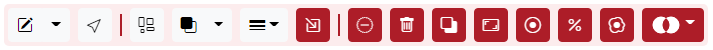
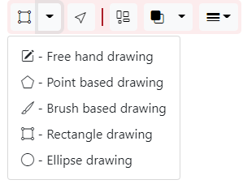
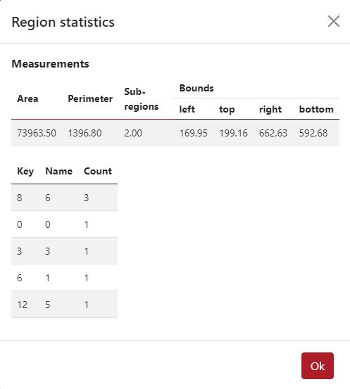

Regions¶
Supported region formats¶
TissUUmaps can read and write region files in the GeoJSON format.
Only a subset of the GeoJSON format is supported, as TissUUmaps uses only polygonal regions:
Main types:
Feature
FeatureCollection
GeometryCollection
Geometries:
Polygon
Multipolygon
The coordinate system must be the same as the image and marker coordinate systems.
TissUUmaps is a powerful annotation tool designed to facilitate the annotation process for biological tissues.
Toolbar Features¶
When entering the Regions tab, the user will see the following toolbar: 
Drawing Tools¶
When the user clicks on the drawing tool, a dropdown menu will appear with five different drawing tools: 
1. Free Hand Drawing¶
The free hand drawing tool allows users to annotate regions with free-form shapes.
2. Point-Based Drawing¶
Use the point-based drawing tool to create annotations by placing individual points.
3. Brush-Based Drawing¶
The brush-based drawing tool enables users to draw annotations using a brush-like tool. Press Shift to erase and Ctrl to add to selected region.
4. Rectangle Drawing¶
Create rectangular annotations by selecting the rectangle drawing tool. Pressing Shift while dragging makes it a square, and Ctrl centers it around the cursor.
5. Ellipse Drawing¶
Similar to the rectangle tool, the ellipse drawing tool allows users to create ellipses. Press Shift for a circle and Ctrl for centering.
Other Tools¶
Selection Tool: Click on regions to select them. Press Shift to select multiple regions.
Show Instance: Color each region randomly to distinguish between polygons.
Fill Opacity: Control if regions are filled, and the opacity of the filling.
Line Width: Adjust line width and determine if it adapts when zooming.
Selected Region Tools¶
When a region is selected, additional tools become available:
Zoom to Selected Regions
Unselect All Regions (Shortcut: Escape)
Delete Selected Region
Duplicate Region
Scale Region
Erode/Dilate Regions
Split Multipolygons into Multiple Regions
Fill Holes in Regions
Multiple Selected Regions¶
When multiple regions are selected, access the “Boolean Operation” dropdown with options like:
Merge Selected Regions
XOR Selected Regions
Intersect Selected Regions
Region Statistics¶
Clicking on the statistics button for a specific region reveals:
Area
Perimeter
Number of Sub-regions
Bounds (left, top, right, bottom in pixel coordinates)
Number of Each Type of Markers

Import Regions¶
Regions can be imported from .json file, which could be achieved from an external software or also from TissUUmaps’ plugin Points2Regions. The user just click on the tab Import -> Choose File and press the button Import.

After that, the displayed regions appear in the left panel and the list of regions in the right panel as you can see in the example below. In this case, there are 10 different regions, called clusters. The user can change the color, the name, and the class of the regions if necessary. The user can as well draw some extra regions. These regions can be analyzed to observe the marker expression.

Export Regions¶
The regions can be exported by clicking the tab Export, there the user can export two types of files. The first one is the .json file and the name can be selected. The second file is the marker expression in the regions which can be exported as .csv file (this is exported only if the regions were analyzed).

In the figure below can be seen an example of the exported .cvs file.